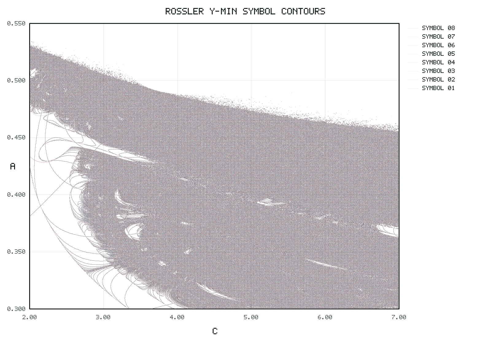
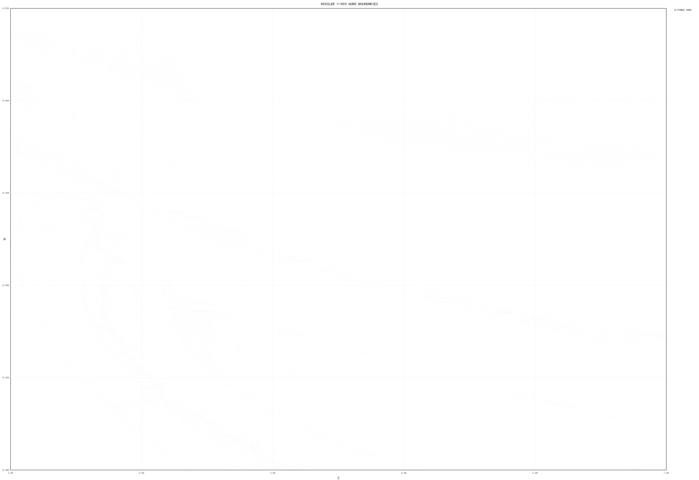
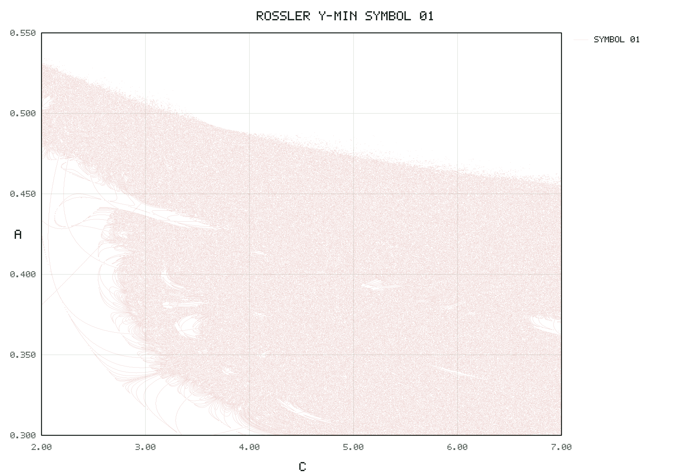
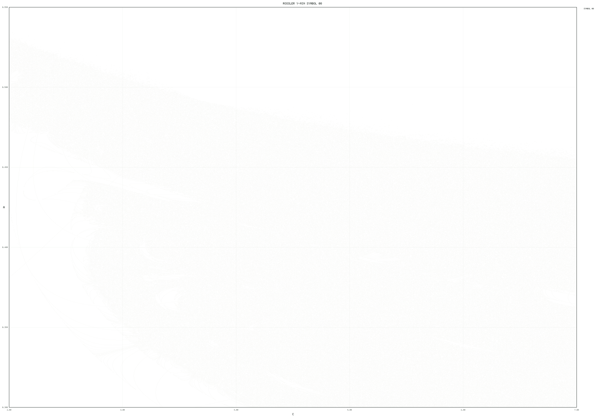

flow_folding
Extremum-section return maps, tangent-sign kneading words, and saddle-focus seeded critical-point continuation for ODE flows.
Scope
The folder is organized around one convention: choose a state variable, collect its
maxima or minima as the Poincare return section, and build scalar return-map or tangent
kneading diagnostics from the accepted event sequence. For the Rössler work here, the
section is y-minima and the kneading symbols are signs of the projected
tangent y component at those minima.
The paper sweep reproduced below uses the Malykh-Shilnikov Rössler variant
xdot=-y-z, ydot=x+a*y,
zdot=b*x+z*(x-c) with b=0.3. The displayed scan covers the
same broad rectangle used for the paper's symbolic diagram, 2 <= c <= 7
and 0.30 <= a <= 0.55, but with the tangent/y-minima convention requested
here instead of the paper's z-maximum threshold coding.
Event Convention
For du/dt=f(u,p,t) and selected variable x=u[i], the section
event is h=f[i]. A maximum requires h=0 and
Dh*f<0; a minimum requires h=0 and Dh*f>0.
No coordinate-sign filter is applied by default.
Tangent kneading words use the variational equation, project the tangent away from the
flow direction, re-normalize it, and encode the sign of the selected observable component.
In the Rössler examples, 1 means positive tangent y component at
a y-minimum and 0 means negative.
Rössler Y-Minima Tangent Scan
Most Common Completed Words
| word | grid points |
|---|
Gray cells did not collect the requested number of accepted y-minima before the configured max-time cutoff. The interactive heatmap uses the compact 128x128 browser data; the contour figures below come from the 1024x1024 PNG-only production scan.
Contour Artifacts
The scan script writes Marching-Squares contours for each tangent symbol and the full 8-symbol word partition. These PNGs are generated from the compressed 1024x1024 TSV.GZ scan.




A TSV summary and word legend live next to the PNGs in
results/rossler_y_minima_tangent_scan_1024/contours/. Overall scan timing is
logged in results/rossler_y_minima_tangent_scan_1024/coarse_scan_runtime.tsv.
Use
Load the Library
include("flow_folding/FlowFolding.jl")
using .FlowFoldingCollect Tangent Symbols at Y-Minima
include("flow_folding/examples/rossler_common.jl")
problem = rossler_y_minima_problem(0.35, 4.6)
events = collect_tangent_extrema_rk4(
problem,
[1.0, 0.0, 0.0],
[1.0, 0.0, 0.0];
observable_index=2,
transient_events=20,
max_events=8,
)
word = tangent_word(events)Run the Default 1024x1024 Rössler Region Scan
julia --project=. flow_folding/examples/rossler_y_minima_tangent_scan.jlRun a Compact Browser-Data Scan
MM_FLOW_FOLDING_NC=128 \
MM_FLOW_FOLDING_NA=128 \
MM_FLOW_FOLDING_WORD_LENGTH=8 \
MM_FLOW_FOLDING_WRITE_DOCS_DATA=true \
julia --project=. flow_folding/examples/rossler_y_minima_tangent_scan.jlRegenerate PNG Contours From an Existing Scan
python3 flow_folding/examples/rossler_y_minima_tangent_pngs.py \
flow_folding/results/rossler_y_minima_tangent_scan_1024/coarse_scan.tsv.gz \
--output-dir flow_folding/results/rossler_y_minima_tangent_scan_1024/contours \
--stem coarse_scan \
--cleanSeeded Critical Point Continuation
julia --project=. flow_folding/examples/rossler_seeded_continuation.jlCore API
| Function | Purpose |
|---|---|
FlowFoldingProblem | Defines vector field, parameters, selected event variable, extremum type, dimension, and optional analytic Jacobian. |
collect_extrema | SciML callback-based accepted extrema collection. |
collect_extrema_rk4 | Fixed-step accepted extrema collection for scan-style workloads. |
collect_tangent_extrema | SciML variational tangent integration and tangent-sign event recording. |
collect_tangent_extrema_rk4 | Fixed-step tangent-sign event recording used by the coarse Rössler scan. |
return_map_sample | Builds X_M -> X_{M+1} scalar return-map samples from event values. |
estimate_critical_points | Local quadratic fold estimates from a sampled one-dimensional return map. |
saddle_focus_seed_ray | Constructs a local seed ray from the unstable complex eigenspace and extremum tangent hyperplane. |
criticality_residual | Evaluates (partial_rho X_{M+1})/(partial_rho X_M) with event-time derivative correction. |
continue_seeded_critical_point | Newton corrector continuation of a seeded critical point along a parameter list. |